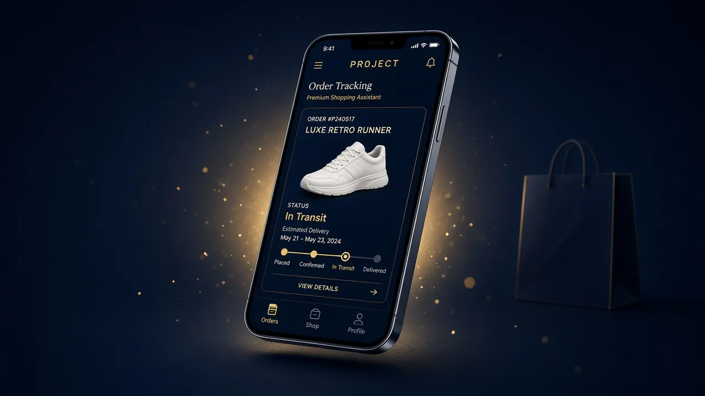
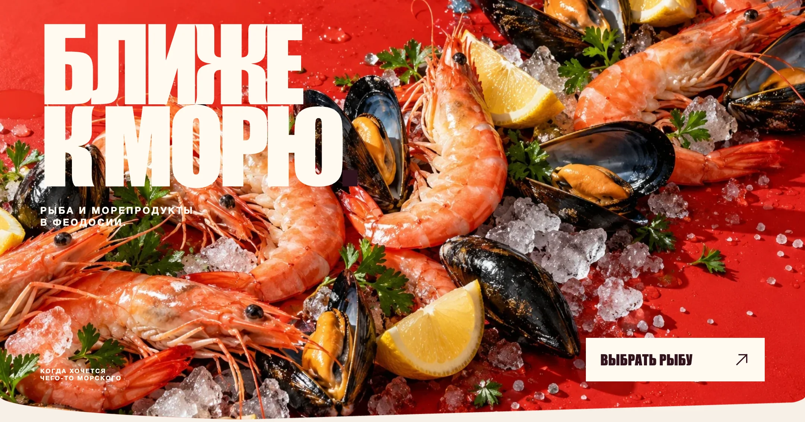
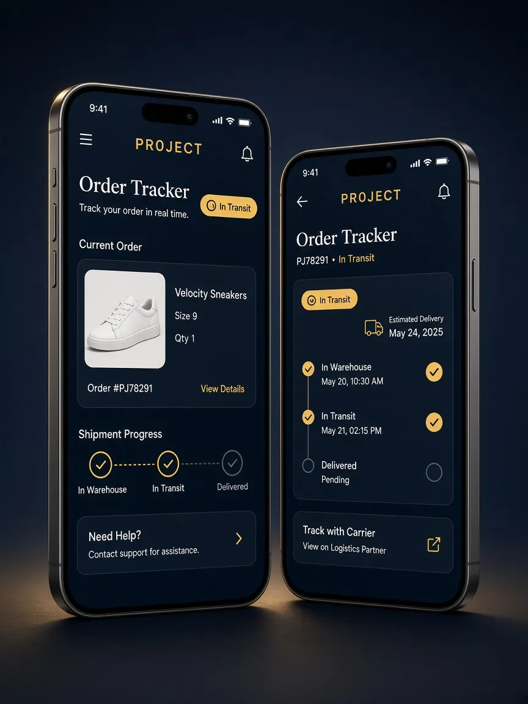

Lublinov / Интерфейсы и айдентикаДизайн + фронтенд
Дизайн интерфейсов.Работающий фронтенд.
В работах указан статус: реальный проект или концепт.
Lublinov — дизайн и фронтенд для сайтов и цифровых интерфейсов. Сайты, лендинги, UI/UX и визуальная айдентика — от дизайна до фронтенд-реализации.
01 / Проекты
Избранные работы.
Разный масштаб задач — от логотипа до интерфейса и его реализации.

CONCEPT / REDESIGN
FEOFISH
Концепция сайта рыбного магазина: выразительная подача продукта, ясный путь к выбору и работающий фронтенд демо-версии.
WEB DESIGN · UI/UX · FRONTEND
Открыть кейс 
CONCEPT
Lumen
Мобильный банковский интерфейс: обзор, карта и перевод. Работа с иерархией информации и ясностью действий.
UI/UX · Mobile interface
Открыть кейс 
CONCEPT
Noir Atelier
Типографика, монограмма и визуальная система вымышленного парфюмерного дома.
Visual identity
Открыть кейс REAL PROJECT
MV Vape Shop
Сфокусированная работа над логотипом. Моя роль — только Logo Design.
Logo Design
Открыть кейс 02 / ВозможностиОдна практика.
Одна практика.
Несколько масштабов.
От отдельного знака до цифрового интерфейса.
Дизайн задаёт логику и характер. Фронтенд переводит эти решения в работающий интерфейс.
01
Digital Design
- Web Design
- Landing Pages
- UI/UX Design
Структура и дизайн согласованных страниц, экранов и адаптивных состояний.
02
Identity
- Logo Design
- Brand Identity
Логотип или визуальная система в объёме конкретной задачи.
03
Development
- Frontend Development
Реализация согласованного дизайна как работающей адаптивной фронтенд-части.
03 / Фокус: PROJECT
От визуального языка до Mini App.
PROJECT объединяет дизайн идентичности, интерфейсов и фронтенд-разработку. В кейсе показаны доступные материалы работающего Telegram Mini App.
- 01Визуальная идентичность и логотип
- 02Интерфейсы Telegram-бота и Mini App
- 03Разработка Mini App

Композиция экранов Telegram Mini App.
04 / Подход
От задачи — к проверенному интерфейсу.
Этапы меняются вместе с объёмом проекта; здесь показана логика работы, а не обещание одинакового процесса для всех задач.
- 01Понять задачуКонтекст, цель, содержание.
- 02Собрать структуруПорядок экранов и информации.
- 03Создать дизайнВизуальная система и состояния.
- 04РеализоватьФронтенд, если он входит в задачу.
- 05ПроверитьРабота, доступность и адаптация.
05 / Обо мне
Обо мне
Работаю на пересечении айдентики, интерфейсов и фронтенда. Для меня визуальное решение и его поведение в браузере — части одной работы.
В PROJECT эта связь видна особенно ясно: от дизайна системы и интерфейса до разработанного Mini App. Остальные кейсы показывают отдельные стороны практики и честно обозначены как реальные работы или концепты.
06 / Контакт
Есть задача по сайту, интерфейсу или логотипу?
Напишите, что хотите создать или изменить. Основной канал связи — Telegram.
Написать в Telegram